- 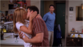s10e1- "The One After Joey And Rachel Kiss"
Romantic hookups continue to go astray in Barbados as Monica, Phoebe and Chandler overhear Ross kissing Charlie, while through the room's other wall they can eavesdrop on Joey and Rachel.
- s10e2 - "The One Where Ross Is Fine" 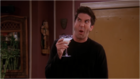
Rachel, Joey and Charlie spend an uncomfortable evening with Ross while Chandler commits an unpardonable act when he and Monica visit a couple who have adopted a cute boy.
- s10e3 - "The One With Ross' Tan"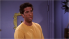
Rachel and Joey nervously anticipate their first real "night" together. Monica and Phoebe try to avoid an obnoxious old friend who puts on airs and a fake accent. .
- s10e4 - "The One With The Cake" 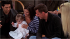
Rachel convinces Monica to delay a long anticipated trip to Vermont. But complications ensue when an X-rated birthday cake arrives.
- s10e5 - "The One Where Rachel's Sister Baby-Sits" 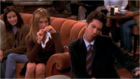
Rachel convinces spoiled sister Amy to baby-sit Emma over Ross's protests. Phoebe unknowingly thwarts Mike's surprise for her. Joey scares Monica and Chandler with a recommendation letter.
- s10e6 - "The One With Ross' Grant" 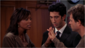
Ross interviews with a Nobel Prize-winning scientist for a paleontology grant - but the doctor is Charlie's ex-boyfriend, who offers Ross the grant only if he breaks up with her.
- s10e7 - "The One With The Home Study" 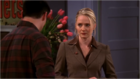
Monica and Chandler meet with an adoption worker who will decide if they're suitable parents - and who confesses that she was once romanced by a cad named Joey in the same building.
- s10e8 - "The One With The Late Thanksgiving" 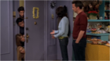
Monica prepares a Thanksgiving feast and is furious when no one shows up! When Joey gets stuck in the door, Monica and Chandler have the ideal remedy. Phoebe convinces Rachel to enroll Emma in a baby beauty contest.
- s10e9 - "The One With The Birth Mother" 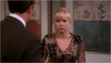
Monica and Chandler travel to Texas to meet a young pregnant woman who is considering allowing them to adopt her child when it's born. Joey dates Phoebe's friend but annoys her with his territorial eating habits.
- s10e10 - "The One Where Chandler Gets Caught" 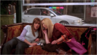
When Phoebe and Rachel see Chandler getting into a car with a pretty woman, they suspect the worst. When they tell Monica, they learn the woman is a real estate agent - and that the couple's been house-hunting outside Manhattan.
- s10e11 - "The One Where The Stripper Cries" 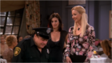
Joey is a celebrity guest on Pyramid. When Monica and Rachel throw a "mature" bachelorette party for Phoebe, they're forced to hire a stripper at the last minute.
- s10e12 - "The One With Phoebe's Wedding" 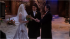
Monica's hard-nosed wedding-planner techniques cause Phoebe to fire her. The big day turns chaotic when a blizzard forces a change in plans.
- s10e13 - "The One Where Joey Speaks French" 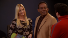
When Phoebe tries teaching Joey to speak French for an audition and fails, she convinces the casting director Joey is retarded. Ross turns down Rachel's request for sympathy sex after her father has a heart attack.
- s10e14 - "The One With Princess Consuela" 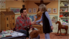
Rachel is fired from her job the same day Ross learns that he has gotten tenure. When Phoebe legally changes her name, Mike does so too to teacher her a lesson.
- s10e15 - "The One Where Estelle Dies"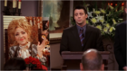
Phoebe tries to protect Joey from the news that his agent Estelle has died. Monica and Chandler check out the house next door to theirs - and discover that Chandler's ex-girlfriend Janice is interested in buying it.
- s10e16 - "The One With Rachel's Going Away Party" 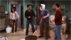
Ross goes berserk when Rachel decides that Monica's farewell party is the perfect time to share a private, tearful goodbye with each friend - with the single exception of Ross!
- s10e17 - "The Last One, Part 1" 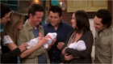
Set to embark on the next chapters in their lives, the six friends spend their last day together, and it's one of the momentous events, major decisions about personal futures and last-minute surprises.
- s10e18 - "The Last One, Part 2" 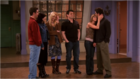
Set to embark on the next chapters in their lives, the six friends spend their last day together, and it's one of the momentous events, major decisions about personal futures and last-minute surprises.